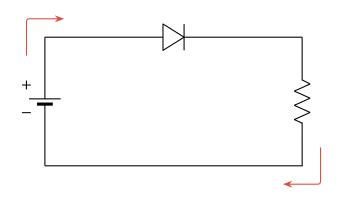

다이오드란 무엇인가?
다이오드는 서로 다른 성질을 가진 두 반도체를 접합하여 만든 전자부품입니다. 다이오드는 여러 전기적 특성을 가지고 있지만,
전류가 한 방향으로만 흐르도록 하는 "정류 작용" 을 주요 기능으로 뽑을 수 있습니다.
외부로부터 전압을 인가받으면 그에 대응되는 전류가 발생하며, 우리가 흔히 사용하는 발광 다이오드 (LED; Light Emitting Diode)와 같이
구조를 적절히 수정하여 다양한 용도로 사용할 수 있습니다. 일반적으로 다이오드는 전자 / 전기 회로에 연결되어 전압을 억제하거나 전류가
역류하지 못하도록 하는 기능을 수행합니다.
